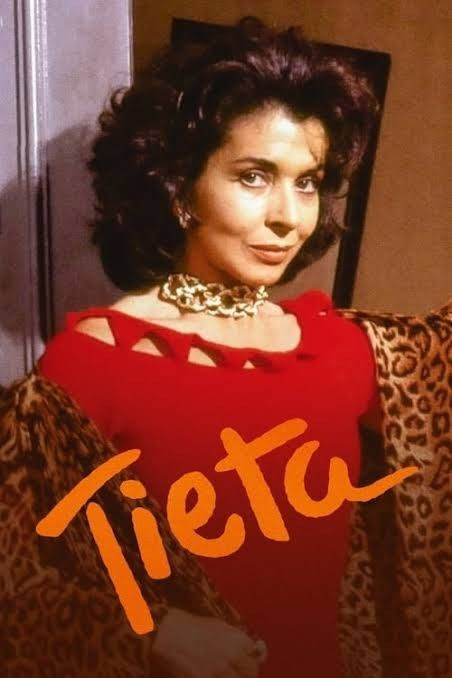
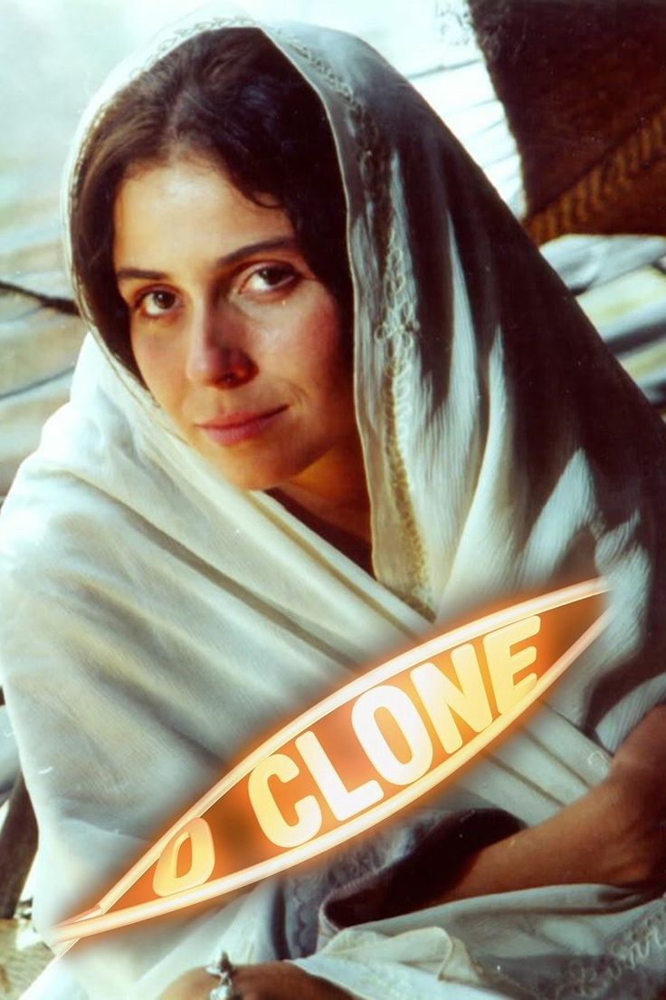
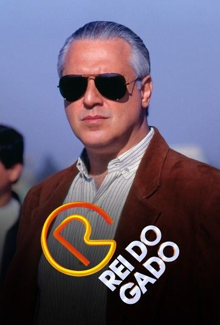

ANTOLOGIA : CADA NOTA, UMA NOTA
  Conheçam André Emílio Ferraz, mais conhecido como Dedé! Aos 17 anos, Dedé já é um verdadeiro entusiasta musical. Ele é a mente brilhante por trás da LIO Studios e do projeto Antologia, onde realiza uma curadoria musical incrível, trazendo à tona os momentos mais marcantes da música brasileira. Desde pequeno, Dedé foi criado num lar onde se escutava de tudo: samba, partido alto, rap, hip-hop, rock e samba-rock. Aos 4, 5 anos, ele se apaixonou pelo pagode, curtindo grupos como Exaltasamba, Jeito Moleque, Inimigos do HP e Turma do Pagode. Ele adorava as canções de Péricles, se inspirava no Thiaguinho e se encantava com o swing do Rodriguinho. Uma canção que sempre chamou sua atenção foi "Filho Único" do Jeito Moleque, que despertou seu amor pela MPB. Mas Dedé não parou por aí! Durante a pandemia, ele mergulhou de cabeça nos estudos musicais, explorando artistas que moldaram seu entendimento da música e de si mesmo. Roupa Nova e Milton Nascimento foram fundamentais nesse processo. O primeiro álbum do Roupa Nova, lançado em 1981, abriu seus olhos para novos horizontes musicais. E quando descobriu o "Clube da Esquina" de Milton Nascimento e Lô Borges, sua paixão pela música só aumentou. Além de ser um ouvinte ávido, Dedé é um criador nato. Ele adora desenhar, cantar, compor e escrever poesia. Sua paixão e talento transparecem em cada projeto que ele abraça. Se você também é apaixonado por música e criatividade, não pode deixar de acompanhar o trabalho desse jovem talentosíssimo!